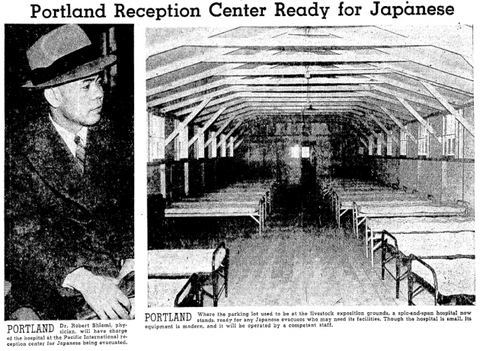

はじめに
明治の末年から戦前までに、何十万人もの日本人が移民として海外に渡りました。広島県は移民県として有名ですが、佐島からもカナダやアメリカへの出稼ぎが珍しくありませんでした。
ロバート・一（ハジメ）・汐見は1904年に汐見の家で生まれ、13才で渡米して医師になったアメリカ日系移民一世です。
戦前からの日系移民排斥と戦時の強制収容を経験し、その歴史を繰り返すまいという想いからか、生涯を通して日本人留学生や文化事業への支援を惜しみませんでした。
佐島でもロバートを知る人は少なくなりましたが、彼の人生はグローバル化が進み地域紛争に悩む現代にあって、もう一度見直される価値があると思います。
汐見の家のリノベをきっかけに調べ始めたロバート汐見の足跡、判ったことを少しずつ載せて参ります。拙い文章ですが、楽しんで頂ければ幸いです。
2015年3月16日
西村 暢子

｢日系人の一時収容所であるパシフィック・インターナショナル・レセプション・センターの担当医に外科医ロバート汐見が着任した。｣
写真左：ロバート汐見、写真右：病棟